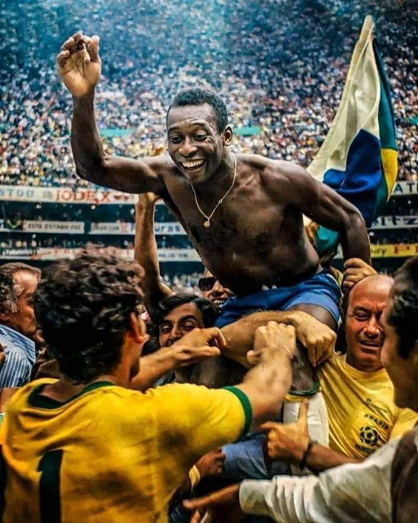
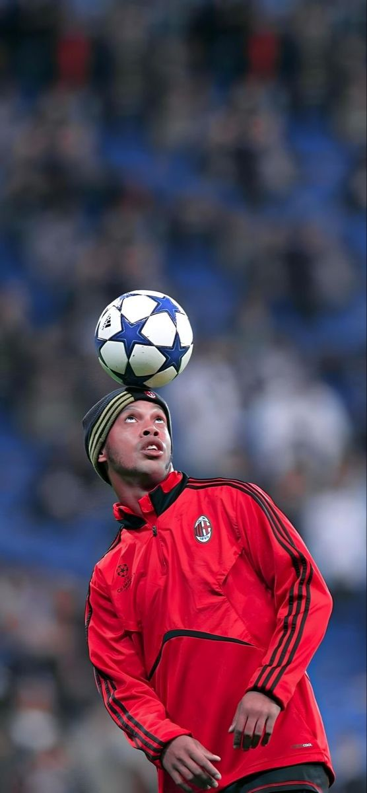
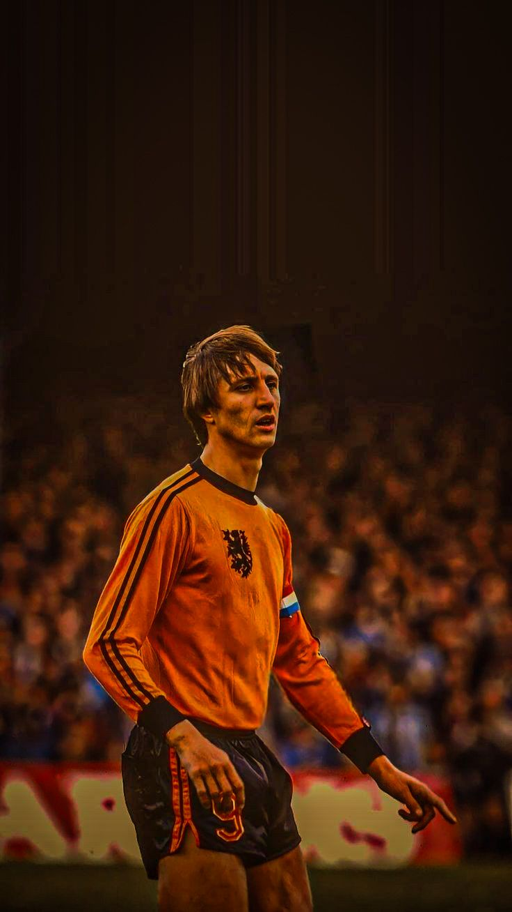

Quelques Légendes du Football
Dans l’histoire du football, certains joueurs se distinguent par leur talent exceptionnel, leurs performances remarquables et leur influence sur le sport. Ces joueurs sont souvent appelés des légendes, car ils ont marqué leur époque et laissé une trace durable dans le monde du football.

Pelé
Triple champion du monde avec le Brésil.
Parmi les plus grandes légendes figure Pelé. Né au Brésil, il est considéré comme l’un des meilleurs joueurs de tous les temps. Pelé a remporté trois Coupes du monde avec l’équipe nationale du Brésil en 1958, 1962 et 1970. Il était connu pour sa technique, sa vitesse, sa précision devant le but et sa capacité à marquer dans presque toutes les situations. Au cours de sa carrière, il a inscrit plus de mille buts, ce qui reste un exploit exceptionnel dans l’histoire du football.
.jpg)
Maradona
Héros de la Coupe du Monde 1986.
Une autre légende du football est Diego Maradona. Le joueur argentin est célèbre pour son incroyable talent technique, son contrôle du ballon et sa créativité sur le terrain. Maradona est surtout connu pour sa performance exceptionnelle lors de la Coupe du monde 1986, où il a conduit l’Argentine à la victoire. Pendant ce tournoi, il a marqué l’un des buts les plus célèbres de l’histoire du football après un dribble spectaculaire à travers plusieurs défenseurs.

Messi
Champion du monde 2022 avec l’Argentine.
Dans le football moderne, Lionel Messi est souvent considéré comme l’un des plus grands joueurs de tous les temps. Grâce à sa vision du jeu, sa précision dans les passes, ses dribbles rapides et sa capacité à marquer des buts importants, il a remporté de nombreux trophées avec ses clubs et avec l’équipe nationale argentine. En 2022, il a réalisé l’un de ses plus grands rêves en remportant la Coupe du monde avec l’Argentine.

Ronaldo
Le Phénomène – Cristiano Ronaldo Cristiano Ronaldo est l’un des plus grands joueurs de l’histoire du football. Né au Portugal, il s’est fait connaître très jeune au sein du Sporting CP avant de rejoindre Manchester United, où il devient une star mondiale. Il confirme ensuite sa légende au Real Madrid, où il marque plus de 450 buts et remporte de nombreux trophées. Ronaldo a gagné plusieurs titres majeurs, dont la UEFA Champions League à plusieurs reprises et le UEFA Euro 2016 avec le Portugal. Connu pour sa discipline, sa puissance physique et son incroyable sens du but, il est considéré comme un modèle de travail et de longévité dans le football.

Ronaldinho
Le Magicien du Football – Ronaldinho Ronaldinho est célèbre pour son talent exceptionnel, ses dribbles spectaculaires et son sourire légendaire. Le Brésilien a marqué l’histoire du football grâce à sa créativité et sa technique unique. Il a brillé notamment avec le FC Barcelona, où il a remporté la La Liga et la UEFA Champions League. Avec la sélection du Brésil, il a gagné la Coupe du Monde de la FIFA 2002. Ronaldinho restera dans les mémoires comme l’un des joueurs les plus spectaculaires de l’histoire, capable de transformer chaque match en spectacle.

Neymar
Le Prince du Dribble – Neymar Neymar est l’un des joueurs les plus talentueux de sa génération. Originaire du Brésil, il s’est révélé au Santos FC avant de rejoindre le FC Barcelona, où il forme un trio d’attaque redoutable avec Lionel Messi et Luis Suárez. Avec Barcelone, Neymar remporte notamment la UEFA Champions League en 2015. Il poursuit ensuite sa carrière au Paris Saint‑Germain, où il devient l’un des joueurs les plus médiatisés du football. Rapide, technique et spectaculaire, Neymar est reconnu pour ses dribbles, sa créativité et sa capacité à changer le cours d’un match.

Ronaldo Nazario
Le Phénomène – Ronaldo Nazário Ronaldo Nazário, souvent appelé “R9”, est considéré comme l’un des attaquants les plus talentueux de tous les temps. Sa vitesse, sa technique et son sens du but ont marqué le football mondial. Il a joué dans de grands clubs comme le FC Barcelona, l’Inter Milan et le Real Madrid. Malgré plusieurs blessures graves, il est revenu au plus haut niveau. Avec le Brésil, il remporte la Coupe du Monde de la FIFA 2002 et termine meilleur buteur du tournoi. Son parcours est souvent cité comme un exemple de talent exceptionnel et de détermination.

Johan Cruyff
Le Roi du Football – Johan Cruyff Johan Cruyff est considéré comme l’un des joueurs les plus influents de l’histoire du football. Originaire des Pays-Bas, il a marqué son époque avec son intelligence de jeu, sa vision exceptionnelle et sa technique élégante. Il devient une star mondiale avec l’AFC Ajax, où il remporte plusieurs titres nationaux et la UEFA Champions League (appelée à l’époque Coupe d’Europe). Il rejoint ensuite le FC Barcelona, où il révolutionne la manière de jouer au football. Cruyff a également mené les Pays-Bas jusqu’en finale de la Coupe du Monde de la FIFA 1974. Son style appelé “football total” a influencé des générations de joueurs et d’entraîneurs.

Franz Beckenbauer
Le Kaiser – Franz Beckenbauer Franz Beckenbauer, surnommé “Le Kaiser”, est l’un des plus grands défenseurs de tous les temps. Né en Allemagne, il est célèbre pour avoir transformé le rôle de défenseur avec élégance et intelligence. Avec le FC Bayern Munich, il remporte plusieurs championnats et la UEFA Champions League. Il conduit aussi l’Allemagne à la victoire lors de la Coupe du Monde de la FIFA 1974. Beckenbauer est l’un des rares joueurs à avoir gagné la Coupe du Monde comme joueur et comme entraîneur, ce qui renforce encore sa légende dans l’histoire du football.